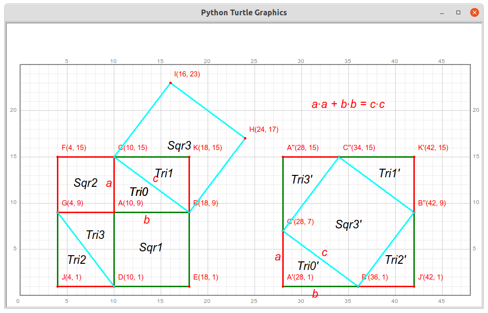

第26讲 勾股定理-毕达哥拉斯定理¶
Lecture26 Pythagorean theorem
Problem 问题描述¶
Draw and Answer Questions 绘图并回答问题
qianglib, draw a grid coordinate system where the origin (0, 0) is at the bottom left of the coordinate system.qianglib库提供的方法，绘制方格坐标纸，其中坐标系的原点(0,0)位于绘图区的最左下方，使用的scale值为20.Follow the steps below，draw a graph slimilar to the picture below. 跟随下面的步骤，绘制出类似如下图所示的图形.

Mark three points A(10, 9), B(18, 9), C(10, 15), draw triangle BAC with black color; mark it with
Tri0, mark the vertices, mark the sides with \(a\),\(b\)和\(c\) for line AC, AB, and BC, respectively; 标记三个点:A(10, 9), B(18, 9), C(10, 15)，用黑色绘制三角形BAC；标记为Tri0; 将这个直角三角形的三条边从短到长分别标记为\(a\),\(b\)和\(c\)；Create a square whose one side is AB below the triangle BAC, name the other tow points of the square D and E such that DE is parallel to AC, D is left to E; name the square as ABED. mark points D and E, Draw this square with green color, mark it as
Sqr1; 以直角三角形的直角边AB为边长，在三角形ABC的下方建立一个正方形，使得三角形的边AB与绘制的正方形重合；构成这个正方形的另外两个顶点命名为D和E，其中边DE与边AC平行，D位于E的左侧；该正方形则称为ABED。标记点D和E，并用绿色绘制这个正方形的边，标记为Sqr1；Create a square whose one side is AC left to the triangle BAC, name the other tow points of the square F and G such that GF is parallel to AC, F is above E; name the square as ACFG. mark points D and E, Draw this square with red color, mark it as
Sqr2; 以直角三角形的直角边AC为边长，在三角形ABC的左侧建立一个正方形，使得三角形的边AC与绘制的正方形重合；构成这个正方形的另外两个顶点命名为F和G，其中边GF与边AC平行，F位于G的上方；正方形则称为ACFG。用红色绘制这个正方形的边；标记为Sqr2;Mark the points H(24, 17), I(16, 23); polygon BHIC is a larger square, draw it with color cyan and mark it as
Sqr3; 标记两个点H(24, 17), I(16, 23)，四边形BHIC是一个较大的正方形；用青色(cyan)绘制这个正方形，标记为Sqr3;Mark the points J(4, 1), K(18, 15); polygon FKEJ is a even larger square; it can be divided into 6 parts: square ACFG, square ABED, triangles BAC, CKG, GJD, GAD. Draw triangles: CKG, GJD, and GAD with color red for shortest side, cyan for longest one and green for the rest one. Mark the triangles as
Tri1,Tri2, andTri3, respectively; 标记两个点J(4, 1), K(18, 15)，四边形FKEJ是一个更大的正方形；正方形FKEJ由6部分组成，分别是正方形ACFG，正方形ABED，三角形BAC, CKG, GJD, GAD, 。绘制三角形CKB, GJD和GAD，颜色依据三角形的边长从短到长分别用红色、绿色、和青色绘制，三角形依次标记为Tri1, Tri2和Tri3；Translate triangle BAC with offset (18, -8), name the new triangle as Tri0’. Draw it with the same colors as Tri0, mark the triangle as
Tri0'. name the corresponding vertices as B’, A’, and C’. Mark the sides with \(a\),\(b\)和\(c\) for line A’C’, A’B’, and B’C’, respectively; 将三角形BAC做幅度为(18, -8)的平移，将得到的新三角形标记为Tri0’，绘制并标记这个三角形，颜色与之前的三角形各边颜色保持相同；将这个直角三角形的三条边从短到长分别标记为:math:a,\(b\)和\(c\)；Translate triangle CKB with offset (24, 0), name the new triangle as Tri1’. Draw it with the same colors as Tri1， mark the triangle as
Tri1'; 将三角形CKB做幅度为(24, 0)的平移，将得到的新三角形标记为Tri1’，绘制并标记这个三角形，颜色与之前的三角形各边颜色保持相同；Mirror triangle GJD with the mirror GJ then translate the mirrored triangle with offset (38, 0). name the new triangle as
Tri2'. Draw this new triangle with same colors as Tri2, name vertex with right angle asJ', 将线段GJ作为一个镜子，对三角形GJD做水平镜像，再把这个水平镜像做幅度为(38, 0)的平移操作，将得到的新三角形记为Tri2’，绘制并标记这个三角形，颜色与之前的三角形各边颜色保持相同；新三角形的直角顶点标记为J';Mirror triangle GAD with the mirror AD then translate the mirrored triangle with offset (18, 6). name the new triangle as
Tri3'. Draw this new triangle with same colors as Tri3, name vertex with right angle asA''; 将线段AD作为一个镜子，对三角形GAD做水平镜像，再把这个水平镜像做幅度为(18, 6)的平移操作，将得到的新三角形记为Tri3’，绘制并标记这个三角形，颜色与之前的三角形各边颜色保持相同；新三角形的直角顶点标记为A'';Draw a text
Sqr3'at the center of the polygonB‘B’‘C’‘C’； 在四边形B‘B’‘C’‘C’中心标记文字Sqr3'；Find some spaces in the draw area, draw the following text:
a∙a + b∙b = c∙c; 在绘图区空白处，绘制文字a∙a + b∙b = c∙c。
Questions
Justify that triangle BACis a right triangle; 证明三角形BAC是一个直角三角形；
Show that the areas of the four triangles(
Tri0,Tri1,Tri2, andTri3) do not change during translation and mirror operations; 展示四个三角形(Tri0,Tri1,Tri2, 和Tri3)在平移和镜像转换时它们的面积不变化；Justify that the Polygon
A''K'J'A'is a Square, let’s call itSqr4; 证明多边形A''K'J'A'是一个正方形。为下文方便，给它命名为：Sqr4；Justify that the the area of
Sqr4is the same as the area of SquareKFJE； 证明两个正方形Sqr4和KFJE面积相等；Justify that the polygon
C''B''B'C'is a square(namedSqr3') that can be considered the translation of squareIHBC(Sqr3), which means their areas are equal. Tell the offset of the tranlsation; 证明多边形C''B''B'C'是一个正方形（命名为Sqr3'),它可以通过平移正方形IHBC(Sqr3)得到。说出平移的幅度。Justify that the area of square
C''B''B'C'(Sqr3') is the sum of area of the squareABED(Sqr1) and the area of squareACFG(Sqr2); 证明正方形C''B''B'C'(Sqr3')的面积是正方形ABED(Sqr1) 和正方形ACFG(Sqr2)的面积值和；
If you successfully proved the above, you proved that for any right triangle, the area of the square whose side is the hypotenuse (the side opposite the right angle) is equal to the sum of the areas of the squares on the other two sides: 如果你成功证明的上述所有命题，那么你就证明了对于任意一个直角三角形，以两条较短的直角边为边长的正方形面积之和等于以直角顶点对应的斜边为边长的正方形的面积：
Answer Area
[ ]:
Math Background 数学背景¶
直角三角形三边长满足勾股定理
勾股定理的证明
Prerequisites 预备知识¶
1. enumerate方法介绍和应用¶
[17]:
students = ["Jason", "Sophie", "Tony"]
[18]:
# iterate each student
for student in students:
print(student)
Jason
Sophie
Tony
[19]:
# iterate each student with index
i = 0
while i < len(students):
print(i, students[i])
i += 1
0 Jason
1 Sophie
2 Tony
[20]:
# iterate each student with enumerate
for i, student in enumerate(students):
print(i, student)
0 Jason
1 Sophie
2 Tony
2. extract list variable and assign part of the elements to variables¶
[21]:
students = ["Jason", "Sophie", "Tony"]
[23]:
first_student, second_student, third_student = students
print(first_student)
print(second_student)
print(third_student)
Jason
Sophie
Tony
[25]:
# what if I only need the name of second student?
# use `_` as a place holder
_, second_stu, _ = students
print(second_stu)
Sophie
[26]:
# by using `_`, should mark all elements who you dont want to extract
# the follwoing will raise an error
_, second_stu2 = students
---------------------------------------------------------------------------
ValueError Traceback (most recent call last)
<ipython-input-26-548cc5a17ba4> in <module>
1 # by using `_`, should mark all elements who you dont want to extract
2 # the follwoing will raise an error
----> 3 _, second_stu2 = students
ValueError: too many values to unpack (expected 2)
Solution 编程求解¶
[1]:
from turtle import setup, reset, pu, pd, bye, left, right, fd, bk, screensize
from turtle import goto, seth, write, ht, st, home, dot, pen, speed
from qianglib import prepare_paper, draw_grid, mark, lines, line, polygon, text
from qianglib import mirror, translate, get_center, add_v
[2]:
width, height = 1000, 600
setup(width, height, 0, 0)
[3]:
prepare_paper(width, height, scale=20, min_x=0, min_y=0, max_y=25)
[4]:
#1. 标记三个点:A(10, 9), B(18, 9), C(10, 15)，三角形ABC是一个直角三角形，
# 用黑色绘制这个三角形；标记为Tri0;
# 将这个直角三角形的三条边从短到长分别标记为 𝑎 , 𝑏 和 𝑐 ;
a, b = 6, 8 # two side lengths of the right triangle ABC
A = (10, 9) # Start Point, vertex of triangle ABC with right angle
B = (A[0] + b, A[1])
C = (A[0], A[1] + a)
Tri0 = [B, A, C]
polygon(Tri0, color="black", center_text="Tri0",
side_texts="bac",
side_text_font = ("Arial", 16, "italic"),
side_text_offsets=[(-0.5, -1.5), (-0.5, -0.5), (0.5, 0)],
side_text_color="red",
marker_texts = ["B"+str(B), "A"+str(A), "C"+str(C)])
[5]:
# 2. 以直角三角形的直角边AB为边长，在三角形ABC的下方建立一个正方形，使得三角形的边AB与绘制的
# 正方形重合；构成这个正方形的另外两个顶点命名为D和E，其中边DE与边AC平行，D位于E的左侧；
# 该正方形则称为ABED。标记点D和E，并用红色绘制这个正方形的边，标记为Sqr1；
D = (A[0], A[1] - b)
E = (B[0], B[1] - b)
Sqr1 = [A, B, E, D]
polygon(Sqr1, color="green", center_text="Sqr1")
mark(D, "D"+str(D))
mark(E, "E"+str(E))
[6]:
# 3. 以直角三角形的直角边AC为边长，在三角形ABC的左侧建立一个正方形，使得三角形的边AC与绘制的
# 正方形重合；构成这个正方形的另外两个顶点命名为F和G，其中边GF与边AC平行，F位于G的上方；
# 正方形则称为ACFG。用红色绘制这个正方形的边；标记为Sqr2
F = (C[0]-a, C[1])
G = (A[0]-a, A[1])
Sqr2 = [A, C, F, G]
polygon(Sqr2, color="red", center_text="Sqr2")
mark(F, "F"+str(F))
mark(G, "G"+str(G))
[7]:
# 4. 标记两个点H(24, 17), I(16, 23)，四边形BHIC是一个较大的正方形；
# 用青色绘制这个正方形，标记为Sqr3
H = (24, 17) # (B[0] + 10*3/5, B[1] + 10*4/5)
I = (16, 23) # (C[0] + 10*3/5, C[1] + 10*4/5)
Sqr3 = [B, H, I, C]
polygon(Sqr3, color="cyan", center_text="Sqr3")
mark(H, "H"+str(H))
mark(I, "I"+str(I))
[8]:
# re-mark all the points
# points = [A, B, C, D, E, F, G, H, I]
# point_names = "ABCDEFGHI"
# for i, point in enumerate(points):
# mark(point, point_names[i]+str(point))
[9]:
# 5. 标记两个点J(4, 1), K(18, 15)，四边形FKEJ是一个更大的正方形；正方形FKEJ由6部分组成，
# 分别是正方形ACFG，正方形ABED，三角形BAC, CKG, GJD, GAD, 。绘制三角形CKB, GJD和GAD，
# 颜色依据三角形的边长从短到长分别用红色、绿色、和青色绘制，三角形依次标记为Tri1, Tri2和Tri3；
J = (4, 1) # (A[0]-6, A[1]-8)
K = (18, 15) # (A[0]+8, A[1]+6)
mark(J, "J"+str(J))
mark(K, "K"+str(K))
colors = ["cyan", "green", "red"] # colors for different sides of triangles
Tri0 = [B, A, C] # the order matters the color of sides.
Tri1 = [C, K, B]
Tri2 = [G, J, D]
Tri3 = [D, A, G]
triangles = [Tri0, Tri1, Tri2, Tri3]
for i, triangle in enumerate(triangles):
polygon(triangle, line_width=3, colors=colors,
center_text="Tri{}".format(i))
[10]:
# 6. 将三角形BAC(Tri0)做幅度为(18, -8)的平移，将得到的新三角形标记为Tri0'，
# 绘制并标记这个三角形，颜色与之前的三角形各边颜色保持相同；
# 将这个直角三角形的三条边从短到长分别标记为 𝑎 , 𝑏 和 𝑐 ;
Tri0p = translate(Tri0, (18, -8))
Bp, Ap, Cp = Tri0p
polygon(Tri0p, colors=colors, center_text="Tri0'",
side_texts="bac",
side_text_font = ("Arial", 16, "italic"),
side_text_offsets=[(-0.5, -1.5), (-0.5, -0.5), (0.5, 0)],
side_text_color="red",
marker_texts = ["B'"+str(Bp), "A'"+str(Ap), "C'"+str(Cp)])
[11]:
# 7. 将三角形CKB做幅度为(24, 0)的平移，将得到的新三角形标记为Tri1'，绘制并标记这个三角形，
# 颜色与之前的三角形各边颜色保持相同；
Tri1p = translate(Tri1, (24, 0))
polygon(Tri1p, line_width=3, colors=colors, center_text="Tri1'")
Cpp, Kp, Bpp = Tri1p
mark(Kp, "K'"+str(Kp))
mark(Bpp, "B''"+str(Bpp))
mark(Cpp, "C''"+str(Cpp))
[12]:
# 8. 将线段GJ作为一个镜子，对三角形GJD(Tri2)做水平镜像，再把这个水平镜像做幅度为(38, 0)的平移操作，
# 将得到的新三角形记为Tri2'，绘制并标记这个三角形，颜色与之前的三角形各边颜色保持相同；
# 标记直角顶点为J'
Tri2_temp = mirror(Tri2, [G, J])
Tri2p = translate(Tri2_temp, (38, 0))
polygon(Tri2p, line_width=3, colors=colors, center_text="Tri2'")
_, Jp, _ = Tri2p
mark(Jp, "J'"+str(Jp))
[13]:
# 9. 将线段AD作为一个镜子，对三角形GAD(Tri3)做水平镜像，再把这个水平镜像做幅度为(18, 6)的平移操作，
# 将得到的新三角形记为Tri3'，绘制并标记这个三角形，颜色与之前的三角形各边颜色保持相同；
Tri3_temp = mirror(Tri3, [A, D])
Tri3p = translate(Tri3_temp, (18, 6))
polygon(Tri3p, line_width=3, colors=colors, center_text="Tri3'")
_, App, _ = Tri3p
mark(App, "A''"+str(App))
[14]:
# 10. Draw a text `Sqr3'` at the center of the polygon `B‘B’‘C’‘C’`；
# 在四边形`B‘B’‘C’‘C’`中心标记文字`Sqr3'`；
text((35, 7), "Sqr3'", font=("Arial", 16, "italic"), color="black")
[15]:
# 11. 在绘图区空白处，绘制文字 a∙a + b∙b = c∙c
text((35, 20), 'a∙a + b∙b = c∙c', font=("Arial", 16, "italic"), color="red")
Summary 知识点小结¶
enumerate方法的使用_作为占位符使用
计算机小知识¶
暂缺
Assignments 作业¶
The three side lengths of a right triangle satisfies the Pythagorean theorem mentioned in this lecture; its inverse proposition is also true; that is, when the three numbers \(a\), \(b\), and \(c\) satisfy \(a^2+b^2=c^2\), then the triangle formed by these three lengths must be a right triangle, and the angle to the longest side is a right angle. Please write a method to find all three integers within 1-100 that satisfy the above equation and print them out. The name of the method, the parameters it accepts, the parameter types, and part of the code for the method are given. 直角三角形的三边长度满足本讲提到的勾股定理；它的逆命题也成立，即当三个数字\(a\),\(b\),\(c\)满足\(a^2+b^2=c^2\)时，以这三个长度构成的三角形一定是一个直角三角形，且最长的边对应的三角形的角是直角。请编写一个方法找出在1-100以内所有的符合上述公式关系的三个整数，并打印出来。方法的名称，接受的参数、参数类型以及方法的部分代码已经给出。
[2]:
def find_all_right_triangles(min_length, max_length):
"""find all triangles whose sides are integers while satisfying the
Pythagorean theorem
Params
min_length: the minimal possible side length
max_length: the maximal possible side length
Return
results: list of a tuple with (a, b, c) where a*a+b*b=c*c, a<=b<c,
and a,b,c are integers
"""
a, b, c = None, None, None,
results = []
for a in range(min_length, max_length):
for b in range(a, max_length):
for c in range(b+1, max_length+1):
if a**2 + b**2 == c**2:
results.append((a, b, c))
return results
[3]:
def verify_find_all_right_triangles(min_length, max_length, results):
"""this method can not tell whether possible combinations are all found, it
only verify existing possibilities.
"""
if len(results) == 0:
print("Empty Results")
return
def get_code(a, b, c):
return str(int(a))+str(int(b))+str(int(c))
is_valid = True
n_passed = 0
hash_results = set()
for result in results:
a, b, c = result
if (a < min_length or a > max_length) or \
(b < min_length or b > max_length) or \
(c < min_length or c > max_length):
print("one of a({}),b({}),c({}) is out of range {}-{}".format(
a, b, c, min_length, max_length))
is_valid = False
elif c <= a or c <= b:
print("c({}) is not greater than a({}) or b({})".format(c, a, b))
is_valid = False
elif a > b:
print("a({}) is greater than b({}), wrong!".format(a, b))
is_valid = False
elif a**2+b**2 != c**2:
print("{}^2+{}^2 != {}^2".format(a, b, c))
is_valid = False
else:
code = get_code(a, b, c)
if code in hash_results:
print("duplicated result for {},{},{}".format(a, b, c))
is_valid = False
else:
n_passed += 1
hash_results.add(str(int(a))+str(int(b))+str(int(c)))
if is_valid:
print("Success:", end="")
else:
print("Failed:", end="")
print("{}/{} passed".format(n_passed, len(results)))
[4]:
min_value, max_value = 1, 100
#results = [(3,4,5), (4,5,7), (6,8,10), (5, 12, 13), (-1, 1, 100), (3,4, 5)]
results = find_all_right_triangles(min_value, max_value)
for result in results:
print(result)
verify_find_all_right_triangles(min_value, max_value, results)
(3, 4, 5)
(5, 12, 13)
(6, 8, 10)
(7, 24, 25)
(8, 15, 17)
(9, 12, 15)
(9, 40, 41)
(10, 24, 26)
(11, 60, 61)
(12, 16, 20)
(12, 35, 37)
(13, 84, 85)
(14, 48, 50)
(15, 20, 25)
(15, 36, 39)
(16, 30, 34)
(16, 63, 65)
(18, 24, 30)
(18, 80, 82)
(20, 21, 29)
(20, 48, 52)
(21, 28, 35)
(21, 72, 75)
(24, 32, 40)
(24, 45, 51)
(24, 70, 74)
(25, 60, 65)
(27, 36, 45)
(28, 45, 53)
(28, 96, 100)
(30, 40, 50)
(30, 72, 78)
(32, 60, 68)
(33, 44, 55)
(33, 56, 65)
(35, 84, 91)
(36, 48, 60)
(36, 77, 85)
(39, 52, 65)
(39, 80, 89)
(40, 42, 58)
(40, 75, 85)
(42, 56, 70)
(45, 60, 75)
(48, 55, 73)
(48, 64, 80)
(51, 68, 85)
(54, 72, 90)
(57, 76, 95)
(60, 63, 87)
(60, 80, 100)
(65, 72, 97)
Success:52/52 passed
Suppose you have successfully found all combinations of the three sides of the triangle that satisfy the Pythagorean theorem within 1-100, you will find that (3, 4, 5), (5, 12, 13), (6, 8, 10), (10, 24, 26) are withen the results. Actually, (3, 4, 5) and (6, 8, 10) can be classified into the same category, because multiplying each number (3, 4, 5) by 2 producess (6, 8, 10). Similarly, (5, 12, 13) and (10, 24, 26) belong to the same category as well. (3, 4, 5) and (5, 12, 13) are the smallest combination in that category. Please write a program to answer, out of all the combinations you found in the previous question, how many different categories are there. For each category, print the combination with the smallest number. 假设你已经成功找出1-100以内所有满足毕达哥拉斯定理的三角形三边长组合，你会发现这里面有(3, 4, 5),(5, 12, 13), (6, 8, 10), (10, 24, 26)等等组合。这其中(3，4，5)和(6，8，10)可以归为同一类别，因为把(3，4，5)每一个数都乘以2就能得到(6, 8, 10)。类似的，(5，12，13)和(10，24，26)是属于同一类组合。(3，4，5)和(5，12，13)组合分别是所在类别中最小的一组。请编写程序回答，在你上一题中找到的所有组合中，一共有多少个不同的组合类别。对于每一个类别的组合，请打印出数字最小的那一组。 Note you may assume that the combinations you acquired by previous question is ordered by the first number(a) of each element with an ascending order. 注意 可以假定在上一题中得到的结果列表中是根据每一个组合中的第一个元素a从小到大排列的。
[11]:
def find_smallest_categories(combinations):
smallest_categories = []
#TODO: add your own codes here
for combination in combinations:
if len(smallest_categories) == 0:
smallest_categories.append(combination)
else:
a, b, c = combination
is_next_smallest = True
for smallest_cat in smallest_categories:
a_s, b_s, c_s = smallest_cat
remainder_a, remainder_b, remainder_c = a%a_s, b%b_s, c%c_s
quotien_a, quotien_b, quotien_c = a//a_s, b//b_s, c//c_s
if remainder_a == 0 and remainder_b == 0 and remainder_c == 0 and \
quotien_a == quotien_b and quotien_b == quotien_c:
is_next_smallest = False
if is_next_smallest == True:
smallest_categories.append(combination)
return smallest_categories
[14]:
smallests = find_smallest_categories(results)
for smallest in smallests:
print(smallest)
(3, 4, 5)
(5, 12, 13)
(7, 24, 25)
(8, 15, 17)
(9, 40, 41)
(11, 60, 61)
(12, 35, 37)
(13, 84, 85)
(16, 63, 65)
(20, 21, 29)
(28, 45, 53)
(33, 56, 65)
(36, 77, 85)
(39, 80, 89)
(48, 55, 73)
(65, 72, 97)
Here are the coordiantes for some points: (0, 0), (6, 12), (10, 24), (24, 18), (16, 16), (25, 25). 这里给出了一些点的坐标，请编写程序/方法来完成下面的任务 Write program and/or methods to do the following tasks:
1). Mark all the points in a draw paper; 在绘图纸上标记上述所有的点；
2). For each point except O(0, 0), calculate the exact area of a square whose side length is the distance between O(0, 0) to that point. you don’t need to draw the square; 对于除了O(0,0)以外的其它所有点，准确计算由这个点到圆点O(0, 0)的距离为边长的正方形的面积。你不需要绘制这个正方形；
3). For each point except O(0, 0), estimate the distance between O(0, 0) to the point; 对于除了O(0,0)以外的其它所有点，近似计算由这个点到圆点O(0, 0)的距离；
4). Draw the line AB, AC, AD, AE, BC, BD, BE, CD, CE, and DE. approximately calculate the length of these lines. the result should be precised to 0.1; 绘制下列线段AB, AC, AD, AE, BC, BD, BE, CD, CE, and DE，并且近似计算这些线段的长度，结果精确到0.1
[57]:
from turtle import setup, reset, pu, pd, bye, left, right, fd, bk, screensize
from turtle import goto, seth, write, ht, st, home, dot, pen, speed
from qianglib import prepare_paper, draw_grid, mark, lines, line, polygon, text
from qianglib import mirror, translate, get_center, add_v
[58]:
width, height = 1000, 600
setup(width, height, 0, 0)
[59]:
prepare_paper(width, height, scale=20, min_x=0, min_y=0, max_y=25)
[60]:
O, A, B, C, D, E = (0, 0), (6, 12), (10, 24), (24, 18), (16, 16), (25, 25)
points = [O, A, B, C, D, E]
point_names = "OABCDE"
[61]:
for i, point in enumerate(points):
mark(point, point_names[i]+str(point))
[62]:
def area_square(point):
return point[0]**2 + point[1]**2
def get_side_by_area(area, epsilon = 0.01):
side = 0
while side < area:
if side * side >= area:
return side
side += epsilon
[63]:
for i, point in enumerate(points):
if i == 0:
continue
area = area_square(point)
side = get_side_by_area(area)
line(start = O, end = points[i])
print("area of square build by O{}, {} is: {}. side is {:.2f}".format(
point_names[i], points[i], area, side))
area of square build by OA, (6, 12) is: 180. side is 13.42
area of square build by OB, (10, 24) is: 676. side is 26.00
area of square build by OC, (24, 18) is: 900. side is 30.00
area of square build by OD, (16, 16) is: 512. side is 22.63
area of square build by OE, (25, 25) is: 1250. side is 35.36
[65]:
def get_vector(start_v, end_v):
return (end_v[0]-start_v[0], end_v[1]-start_v[1])
for i, point_start in enumerate(points):
if i == 0:
continue
for j, point_end in enumerate(points[i+1:]):
line(point_start, point_end)
line_v = get_vector(point_start, point_end)
area = area_square(line_v)
side = get_side_by_area(area)
print("from {} to {}, length is about: {:.2f}, area is: {}".format(
point_start, point_end, side, area))
from (6, 12) to (10, 24), length is about: 12.65, area is: 160
from (6, 12) to (24, 18), length is about: 18.98, area is: 360
from (6, 12) to (16, 16), length is about: 10.78, area is: 116
from (6, 12) to (25, 25), length is about: 23.03, area is: 530
from (10, 24) to (24, 18), length is about: 15.24, area is: 232
from (10, 24) to (16, 16), length is about: 10.01, area is: 100
from (10, 24) to (25, 25), length is about: 15.04, area is: 226
from (24, 18) to (16, 16), length is about: 8.25, area is: 68
from (24, 18) to (25, 25), length is about: 7.08, area is: 50
from (16, 16) to (25, 25), length is about: 12.73, area is: 162
[ ]: